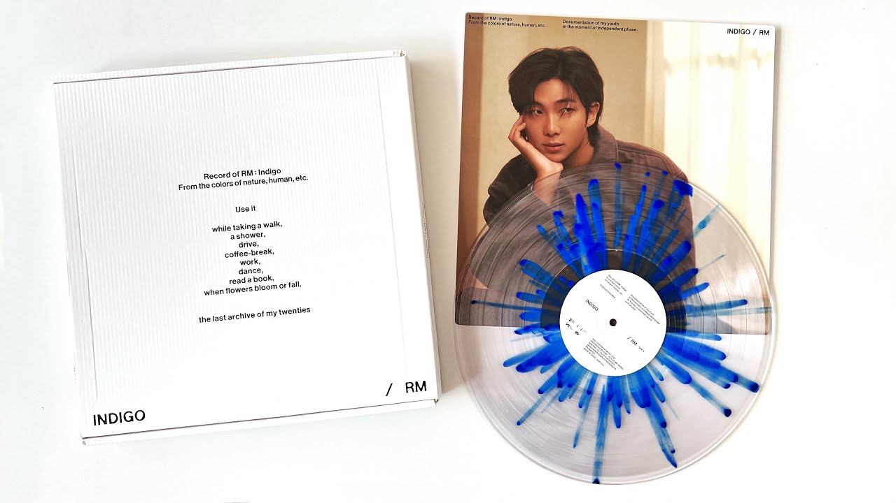

Kim Namjoon
Kim Namjoon

¿Quién es?
Kim Namjoon, cuyoo nombre artístico es RM, nació el 12 de septiembre de 1994 en Seúl, Corea del Sur, y actualmente se encuentra en sus 30 años. Es el líder de BTS, rapero principal y una de las mentes creativas más importantes del grupo. Desde joven destacó por su inteligencia, con un coeficiente intelectual alto, así como por su interés en la literatura, el arte contemporáneo y la filosofía, elementos que han influido profundamente en sus letras. Además, es conocido por su dominio del inglés, el cual aprendió en gran parte de manera autodidacta y con ayuda de la serie popular "Friends".
Su unión a BTS
RM fue el primer integrante en formar parte del proyecto de Big Hit Entertainment, cuando aún era un adolescente activo en la escena underground del hip-hop coreano. Su talento como rapero llamó la atención de la compañía, que decidió construir el concepto inicial del grupo en torno a él. Gracias a su liderazgo natural, fue elegido como líder, tomando como primer nombre artístico Rap Monster, cambiándolo posteriormente a RM, ha desempeñando un papel fundamental en la comunicación del grupo a nivel internacional y en la dirección artística de BTS desde sus inicios.
Trabajo solista
Como solista, RM ha demostrado una identidad musical introspectiva y artística, destacando canciones como “Wild Flower” y “Seoul”. Su estilo mezcla hip-hop, lo-fi, indie y sonidos alternativos, con letras que exploran temas como la identidad, la presión social, la soledad y el crecimiento personal. Sus composiciones suelen sentirse más como diarios emocionales que como simples canciones comerciales.
¡Escucha su música!
Adéntrate en la profundidad emocional y artística de Indigo, un álbum que transforma pensamientos y emociones en una experiencia sonora única.
Conoce su música